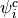
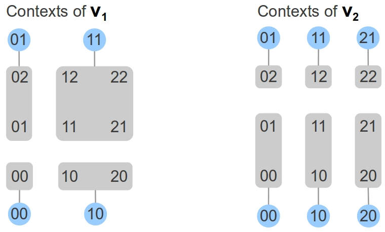

4. Appendix A: Finite Dynamical Systems¶
4.1. Background: Finite Dynamical Systems¶
Finite dynamical systems consist of a finite set  , called state space, and a function , called update function. For any state
, called state space, and a function , called update function. For any state  we can then study the trajectory that unfolds by the given function. An immediate observation is that, since is finite, every trajectory is finite in the sense that it must end in a cycle of some length , where cycles of length 1 are called steady states and cycles of length at least 2 are called cyclic attractors. The union of steady states and cyclic attractors makes the set of attractors of the system . Of course, the trajectories of two different states may end up in the same attractor. It is therefore not easy to predict how many different attractors there are in a given system.
we can then study the trajectory that unfolds by the given function. An immediate observation is that, since is finite, every trajectory is finite in the sense that it must end in a cycle of some length , where cycles of length 1 are called steady states and cycles of length at least 2 are called cyclic attractors. The union of steady states and cyclic attractors makes the set of attractors of the system . Of course, the trajectories of two different states may end up in the same attractor. It is therefore not easy to predict how many different attractors there are in a given system.
In 1969 Stuart Kauffman published a study that applied finite dynamical systems ideas to modelling the dynamics of gene regulatory networks (see [Kauffman69]).
Kauffman modelled gene products with Boolean variables, that encode whether the respective product is present or not. Regulatory effects were abstracted to Boolean functions that calculate the state of a product from the state of its regulators.
Kauffman computed trajectories of randomly generated Boolean networks and counted the number of different attractors. His findings suggest that there are roughly as many attractors in a Boolean network of  variables, as there are different cell types in an organism with a genome consisting of genes.
variables, as there are different cell types in an organism with a genome consisting of genes.
The particular difficulty one faces when modelling regulatory networks is that the function  is not known. Instead, a graph structure underlying the function is assumed, usually obtained by reverse engineering techniques, and the set of functions that is compatible with the graph structure is considered feasible. In the following sections we discuss the graph structure, called regulatory graph, the set of functions that are compatible, called the parametrizations of a regulatory graph and the asynchronous and unitary update stategy, that is used to describe the dynamics, i.e., the state transition graph of a parametrization.
is not known. Instead, a graph structure underlying the function is assumed, usually obtained by reverse engineering techniques, and the set of functions that is compatible with the graph structure is considered feasible. In the following sections we discuss the graph structure, called regulatory graph, the set of functions that are compatible, called the parametrizations of a regulatory graph and the asynchronous and unitary update stategy, that is used to describe the dynamics, i.e., the state transition graph of a parametrization.
Table of contents of Appendix A
4.2. Regulatory graphs¶
The components that are involved in a regulatory network and their dependecies
can be captured in directed graph . An arc is called an interaction.
The predecessors are called regulators of  , and its successors
, and its successors  are called targets of .
are called targets of .
Running example: As a running example, consider the complete graph of two components
:
Since we are not only interested in the structure of the network but also in its dynamics, we interpret the components as integer variables whose values signify the level of activity, e.g. the concentration level, of the corresponding substance. Naturally, the impact a regulator has on its target depends on the regulators activity. To define a model of the networks dynamics we therefore have to specify a set of activity levels for each component, and interaction thresholds, that allow us to distinguish the effects that a regulator has on its target. Since we are interested in finite dynamical systems, every component must have a maximal activity level and all interaction thresholds originating in it must lie below that maximal value. This leads to the following definition:
Regulatory graph
A regulatory graph
consists of components
, interactions
and two functions
and
. The function assigns a non-zero number
, called maximal activity level of
We call  the multiplicity of the interaction, a concept first introduced in Section 2 of [Chaouiya03].
The condition that thresholds must be greater than 0 is required,
because we want regulators to be able to fall below each of their interaction thresholds.
Although there is no restriction on the value of the maximal activity of a component, it is common to choose a value which is at most equal to the number of targets of that component.
A component that has two targets does therefore not usually have a maximal activity level equal to 3.
the multiplicity of the interaction, a concept first introduced in Section 2 of [Chaouiya03].
The condition that thresholds must be greater than 0 is required,
because we want regulators to be able to fall below each of their interaction thresholds.
Although there is no restriction on the value of the maximal activity of a component, it is common to choose a value which is at most equal to the number of targets of that component.
A component that has two targets does therefore not usually have a maximal activity level equal to 3.
Running example: We choose the thresholds and maximal activities to be
In the drawing of the regulatory graph, we label nodes with component name and activity interval, and interactions with thresholds:
4.3. State space and state formulas¶
To a regulatory graph  we associate the state space
we associate the state space
An element is called a state of the regulatory graph and we use the
subscript notation  to denote the activity of in state
to denote the activity of in state  .
Since the state space is a cartesian product, it can naturally be arranged to form a grid with as many dimensions as there are components.
.
Since the state space is a cartesian product, it can naturally be arranged to form a grid with as many dimensions as there are components.
Example: We give two examples: The 2-component regulatory graph of the Running example and its state space, arranged in a 2-dimensional grid,
and a 3-component regulatory graph and its state space, arranged in a 3-dimensional grid:
When we discuss the dynamics of a regulatory graph, we will assign behaviors the descriptions of the system. We might, for example, say: If the activity of component  is greater or euqal to
is greater or euqal to  , then the activity of its target
, then the activity of its target  will tend to
will tend to  .
The first part of this statement, “If the activity of is greater or euqal to ”, is a description of the state of the system. We can then enumerate all states to which this description applies.
Therefore, a system description implicitly defines a subset of the state space.
.
The first part of this statement, “If the activity of is greater or euqal to ”, is a description of the state of the system. We can then enumerate all states to which this description applies.
Therefore, a system description implicitly defines a subset of the state space.
It is convenient to formalise system-descriptions by means of a language. The atomic statements in this language are inequalities regarding the component activities. These can be combined by logic operators to form more complex formulae, that we call “state formulas”.
As a remark: This is analogous to the “propositional logic formulae over AP” in model checking (see e.g. A.3 in [Baier08]). Before we define the state formula syntax, let us take a look at some examples:
Running example: We give three examples to illustrate how state formulas, i.e., system descriptions, define subsets of the state space. States to which the description applies are enclosed in gray boxes.
Now to the formal definitions of the syntax.
State formulas
Let be the components and maximal activities of the considered state space
atom ::= component operator component | component operator activity | 'True' component ::= 'v1'|'v2'|...|'vn' activity ::= '0'|'1'|'2'|...|'M' operator ::= '<'|'<='|'='|'>='|'>'|'!='State formulas are defined to be propositional logic formulas over the atomic propositions:
state_formula ::= atom | 'not' state_formula | state_formula 'and' state_formula | state_formula 'or' state_formulaWe can evaluate a formula
, i.e., turn it into a subset of
. A state
is used to reference all states, i.e., .
Running example: The state belongs to the evaluation of the formula , because the Boolean expression obtained from the formula by replacing the component names with the activities of the state is , which is true.
Note that taking the union of the evaluations of two formulas is equivalent to evaluating the disjunction . Similarly,
4.4. Parametrizations¶
In this subsection we discuss how to parametrize a regulatory graph. A parametrization allows us to determine all transitions between states and thus study the dynamics of a regulatory network. A parametrization provides all the information necessary to determine the combined effect of components on their targets in every state. The effect will not necessarily depend on the exact component activities of a considered state, but only on the regulation thresholds that are surpassed in this state. We formalize this idea in the following concepts.
Interaction intensities
The thresholds of an interaction
divide the effect of the regulator
into
cases of different intensity, denoted by . To each intensity we associate a state formula :
The formula associated to intensity references all states, where the regulators activity has surpassed  thresholds of .
Therefore, every state of state space is referenced by exactly one intensity formula: the evaluated formulas form a partition of the state space.
In the simplest case an interaction has a single threshold. Such an interaction defines two intensities, namely 0 and 1,
and two formulas: the formula where the regulators activity is below the threshold, and the one where it is equal to or above it.
thresholds of .
Therefore, every state of state space is referenced by exactly one intensity formula: the evaluated formulas form a partition of the state space.
In the simplest case an interaction has a single threshold. Such an interaction defines two intensities, namely 0 and 1,
and two formulas: the formula where the regulators activity is below the threshold, and the one where it is equal to or above it.
Running example: The table below lists all intensities and associated state formulas.
The four images below illustrate the state space partitions for every interaction. States that have the same intensity with respect to an interaction are enclosed by gray boxes. The corresponding intensity of the interaction is indicated inside the blue circles:
![\begin{array}{l|ll}
\textrm{Interaction}&\textrm{Intensity}&\textrm{State formulas}\\
\hline
v_1v_1 & 0 & \psi_{v_1v_1}^{0}:\equiv 0\leq v_1<1\\
& 1 & \psi_{v_1v_1}^{1}:\equiv 1\leq v_1\leq2\\
\hline
v_1v_2 & 0 & \psi_{v_1v_2}^{0}:\equiv 0\leq v_1<1\\
& 1 & \psi_{v_1v_2}^{1}:\equiv 1\leq v_1<2\\
& 2 & \psi_{v_1v_2}^{2}:\equiv 2\leq v_1\leq2\\
\hline
v_2v_1 & 0 & \psi_{v_2v_1}^{0}:\equiv 0\leq v_2<1\\
& 1 & \psi_{v_2v_1}^{1}:\equiv 1\leq v_2\leq2\\
\hline
v_2v_2 & 0 & \psi_{v_2v_2}^{0}:\equiv 0\leq v_2<2\\
& 1 & \psi_{v_2v_2}^{1}:\equiv 2\leq v_2\leq2\\
\end{array}.](_images/math/ba0eae0e08f1f9a1cd316bc31ef3cb839adb93fd.png)
The intensities of an interaction give only an incomplete picture of a components regulation, because the other regulators intensities are left unspecified. A complete specification of the intensities of all regulators of a component is called a regulatory context of that component:
Regulatory context
Let
be the number of regulators of a component
be their indices in

As before with the levels of an interaction we identify each regulatory context of a component with a state formula .
We do this by taking the conjunction of the formulas associated to each regulators intensity in the context.
The formula associated to a context of component is therefore ,
where  is the formula associated to intensity .
is the formula associated to intensity .
Running example: The table below lists all regulatory contexts and associated formulas.
![\begin{array}{l|ll}
\textrm{Component}&\textrm{Context}&\textrm{State formula}\\
\hline
v_1 & 00 & \psi_1^{00}:\equiv 0\leq v_1<1 \textrm{ and } 0\leq v_2<1\\
& 01 & \psi_1^{01}:\equiv 0\leq v_1<1 \textrm{ and } 1\leq v_2\leq2\\
& 10 & \psi_1^{10}:\equiv 1\leq v_1\leq2 \textrm{ and } 0\leq v_2<1\\
& 11 & \psi_1^{11}:\equiv 1\leq v_1\leq2 \textrm{ and } 1\leq v_2\leq2\\
\hline
v_2 & 00 & \psi_1^{00}:\equiv 0\leq v_1<1 \textrm{ and } 0\leq v_2<2\\
& 01 & \psi_1^{01}:\equiv 0\leq v_1<1 \textrm{ and } 2\leq v_2\leq2\\
& 10 & \psi_1^{10}:\equiv 1\leq v_1<2 \textrm{ and } 0\leq v_2<2\\
& 11 & \psi_1^{11}:\equiv 1\leq v_1<2 \textrm{ and } 2\leq v_2\leq2\\
& 20 & \psi_1^{20}:\equiv 2\leq v_1\leq2 \textrm{ and } 0\leq v_2<2\\
& 21 & \psi_1^{21}:\equiv 2\leq v_1\leq2 \textrm{ and } 2\leq v_2\leq2\\
\end{array}.](_images/math/247868e2602bef6de8036a34a74fb20dd2c7f4ff.png)
{kind=link}
{kind=link}
{kind=link}
{kind=link}
{kind=link}
{kind=link}
As before with the intensities of an interaction, the evaluated formulas of the contexts of a component form a partition of the state space.
Running example: The two images below illustrate how the regulatory contexts of a component partition the state space. States belonging to the same part are enclosed by gray boxes. The intensities of the contexts are indicated inside the blue circles:

{kind=link}
A regulatory context is the fundamental building block of a components dynamics. It is what the component can perceive of the state of the system. As this description suggests, a components dynamics must be identical in every state that belongs to the same regulatory context. The dynamical behavior, or what the component does in a state of the system, is determined by assigning a target activity value to each of its contexts. It should be interpreted as a regulation tendency: It describes, in absolute terms, the activity towards which the component tends, if it is in the context.
Now, we define the kinetic parameters as a set of symbolic variables representing a component and one of its contexts.
Kinetic parameters
To a regulatory graph
of symbolic variables, called kinetic parameters. Each kinetic parameter represents exactly one regulatory context of one component . To simplify notation, we use concise tuple representation for the contexts, i.e., instead of .
A regulatory graph has therefore kinetic parameters. The running example has parameters. Finally, we can define an assignment, called parametrization, of target values to the kinetic parameters:
Parametrization
Let be the maximum of all maximal activities. A function
, that assigns target values to the kinetic parameters
, such that
is called a parametrization of a regulatory graph
to denote and use concise tuple representation for the contexts.
We can easily count the number of distinct parametrizations for a regulatory graph. A regulatory graph has
different parametrizations. The running example has parametrizations.
How are parametrizations used to study the dynamics of a regulatory graph? We can turn them into update functions: As a consequence of the observation that the regulatory contexts of a component form a partition of the state space, every state falls into exactly one context of each component. A parametrization is therefore unambiguous when it comes to the target value of a component in a state. Since this is true for every component, a parametrization defines a function on the state space: Each state is mapped to the state consisting of the respective target values. We can therefore interpret a parametrized regulatory graph as a finite dynamical system as introduced above, in the Section: Background.
Running example: The state falls into context of component
4.5. Asynchronous dynamics¶
The dynamics of pair is captured in a so-called state transition graph.
It is a directed graph  where is the state space and is a set of transitions derived from the parametrization by certain update rules. The update rules of the networks introduced in Section: Background are one example. They are synchronous, i.e., components are updated in parallel, and non-unitary, i.e., activities may instantly change to any level. Both are strong simplifications.
where is the state space and is a set of transitions derived from the parametrization by certain update rules. The update rules of the networks introduced in Section: Background are one example. They are synchronous, i.e., components are updated in parallel, and non-unitary, i.e., activities may instantly change to any level. Both are strong simplifications.
In a more realistic model, the time between the activation of a gene and its product reaching a certain concentration threshold is considered. Different components are then likely to have different synthesis and degradation rates. R. Thomas formalized this refinement and introduced the fully asynchronous update rules (see [Thomas91]): During a transition, the activity of at most one component changes. If many components “want to change”, we add alternative transitions to the transition graph. A state may then have several successor states and we end up with a non-deterministic model.
With the intention to employ finite dynamical systems in the search for steady states in systems of differential equations, R. Thomas and E.H. Snoussi introduced unitary transitions. An activity changes by either +1 or -1 during a transition, it does not “jump”.
Four different combinations are possible to pair any of “synchronous, asynchronous” with any of “unitary, non-unitary”. To illustrate the resulting transitions consider the state and assume that the parametrization we are working with computes the target state , i.e., . The image below has four parts, one for every type of update rule. Transitions are indicated by arrows.
{kind=link}
The transitions of the unitary asynchronous transition graph of a parametrized regulatory graph are defined as follows. For every component and each of its regulatory contexts, we increase the activity of states in the context and below the target value by one, and decrease the activity of states above the target value by one. States where the activity of the considered component is equal to the target value are left steady. To simplify notation for unitary changes, we interpret states as vectors and use vector addition with the unit vector in direction .
Asynchronous transitions
For each context of each component
:
- Increase: For every state add the transition to
- Decrease: For every state add the transition to
Finally, we add a loop onto every state
To do:
- Illustration for adding transitions by the rules (1) and (2) for a single context of a single component.
- Illustration of a STG for running example.
- Discuss “normalization” of parametrizations for asynchronous transition graphs.